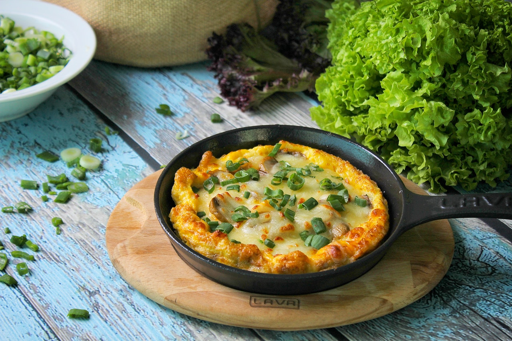

Basic Frittata

Description
If you are looking for something delicous that sounds
harder to cook than it is then look no further.
The basic frittata is a nice savory egg based dish
that doesn't require much effort to put together.
Keep in mind this dish is very versatile and their is a
plethora of different ingredients you can add depending
on how you feel on a given day. Keep it simple or spice
it up, the choice is yours.
Ingredients
- 1 red bell pepper
- 2 tablespoons of olive oil
- 1 sweet onion, julienned
- 9 large eggs
- 1 teaspoon kosher salt
- 1/4 cup heavy cream
- 1/4 cup + 2 tablespoons milk
- pepper to taste
- 1 cup grated cheddar
- 1/4 cup crumbled feta
Steps
- Over medium-high heat, in a ten-inch (with oven safe handle),
non-stick pan, add enough olive oil to cover the bottom
of the pan. Add the onion, season to taste with salt,
saute for two minutes or until softened, then add the
pepper; continue to saute for three more minutes or
until it gets some color.
- In a bowl, beat the eggs until homogenous, whisk the
eggs to incorporate air. Add the salt, heavy cream,
whole milk, and add it to the pan.
- Add the cheddar, feta cheese, stir the mixture until
the eggs begin to pull from the pan, and place it in
the oven (convection if possible) for 15 - 18
minutes or until puffed and cooked
- Let it cool down for one minute and invert to a plate.
Add grated cheese of choice, sprinkle some pepper,
and a touch of olive oil